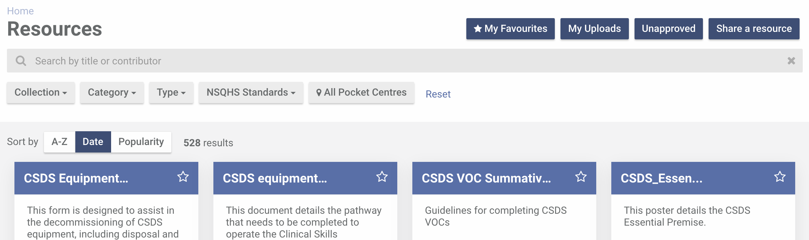
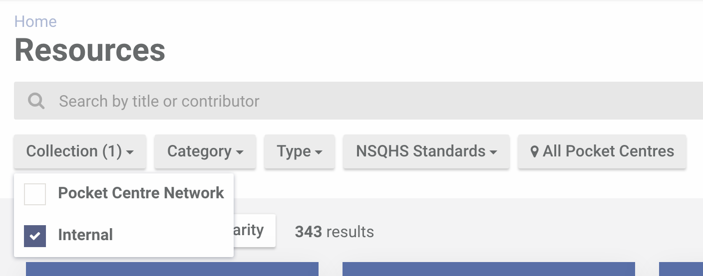
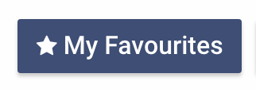
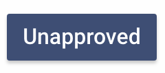
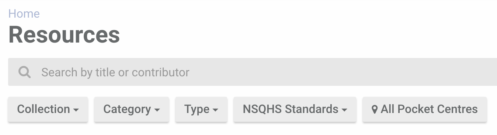
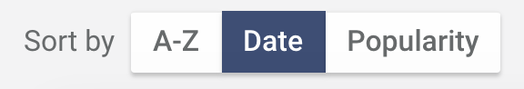

To search for a resource, head over to the Resources page. If you know a part of the title or the contributor of the resource you're looking for, type it into the search field.
To view resources available only internally to your Pocket Centre only, update the "Collection" filter to Internal.
To see your favourites, click the "My Favourites" button.
To see your uploads, click the "My Uploads" button.
To see unapproved resources from your Pocket Centre, click the "Unapproved" button.
Use the filters below the search field to further narrow down your search results.
You can also sort your search results by using the "Sort by" buttons.
